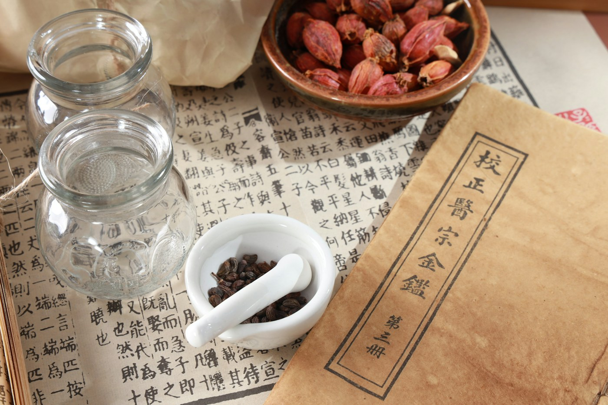

柴灣青年廣場
社區運動課程
香港島Community Taekwondo / 普及運動課程 — 跆拳道
本會積極推動社區體育，於全港多區提供專業康體教育服務，歡迎各界報名。課程由具經驗的教練帶領，讓學員在安全、有紀律的環境中建立體能與自信。
Find A Class Near You
我們選擇走進社區會堂、青少年中心與社區空間，讓運動不必長途跋涉，也不用昂貴會籍。
社區運動課程
香港島青少年綜合服務
新界社區運動課程
新界社區運動課程
新界社區運動課程
九龍社區運動課程
香港島社區運動課程
新界社區運動課程
新界社區運動課程
香港島各場地的課程對象、時間及費用略有不同。報名前請先向協會查詢最新安排；基層家庭可同時了解訓練費用減免計劃。
Counselling Psychology / 專業輔導心理學服務
現代社會急速發展，都市人的心理健康同樣需要細心呵護。本會聯同註冊社工及輔導心理學家，為受情緒困擾、家庭壓力、青少年成長危機或創傷後遺的市民提供專業、保密的輔導服務。透過個案輔導、心理評估及小組工作，協助大眾重建心靈韌性，走出困境。

Traditional Chinese MedicineTCM Health & Referral / 中醫健康講座及臨床轉介服務
結合傳統中醫學智慧與現代公共衛生理念，本會定期舉辦「中醫防病與四季養生」公眾講座，由註冊中醫師主講，向社區推廣食療、穴位保健及治未病概念。同時，對於經評估需要進一步調理的基層市民，協會提供中醫義診轉介及資助服務，讓大眾受惠於優質的中醫藥保健。
四季養生、食療入門、穴位保健與常見病預防，以生活化方式走進社區。
為經評估的基層市民提供中醫義診轉介，並按情況協助相關調理費用。
Good To Know